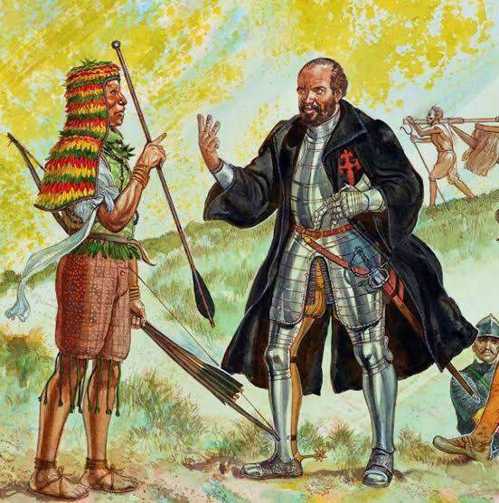

Quais Indígenas Ficaram Aliados dos Portugueses
Muitos indígenas se aliaram à eles, passando de mais de 150 mil indígenas aliados aos seus colonizadores. Sendo elas: as tribos Tremembé, Tabajara, Tupiniquim, Temininó , Tamoio, era uma das tribos que se aliaram aos colonos.
Os Tremembés: Localizados atualmente no Ceará, porém séculos anteriores, pertenceram ao Sul do Maranhão até o Rio Acaraú (Ceará). Criaram relações com os portugueses por serem atacados constantemente pelas tribos Tapuias e tribos da mesma região. Nessa aliança, eles procuraram os portugueses e jesuítas para obter proteção militar e espiritual. Ao terem proteção espiritual, ou seja, quando se converteram ao cristianismo, ficaram mais próximos dos colonizadores. Claro que com essa aproximação, acabaram perdendo um pouco da sua autonomia e cultura, mas escaparam da escravidão e das guerras com outras tribos.
Os Tupiniquins: Encontrados no litoral sudeste, pelos primeiros colonizadores portugueses. Lugar onde poderiam exercer suas maiores habilidades, como caça, pesca e coleta. Já que o litoral é um lugar abundante em recursos naturais e adaptação do ambiente. Se aliaram aos portugueses porque eram inimigos dos Tamoios (que eram apoiados pelos franceses) e com a ajuda dos portugueses, teriam vantagens militares para enfrentá-los. Com essa aliança buscavam proteção contra a escravidão, já que os portugueses atacavam as tribos inimigas, porém protegiam as suas aliadas. Porém não foi isso que aconteceu. Os Tupiniquins até receberam ferramentas de ferro, armas, presentes e tecidos como troca de se aliarem. Porém, essa aliança resultou no que mais queriam, que era derrotar os Tamoios. Mas, depois perderam sua autonomia e forçados a missões jesuíticas.
